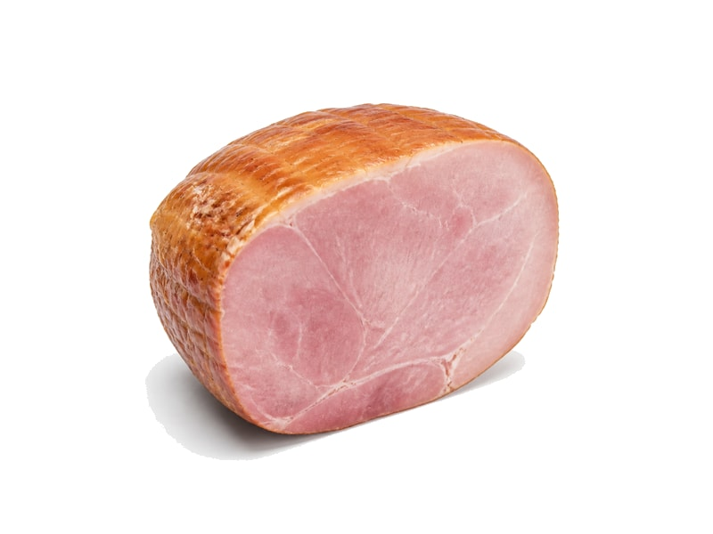

Mięsa i ryby
Baleron
Baleron: 16 g białka, 255 kcal, 1 g węglowodanów i 20 g tłuszczu na 100 g. Kategoria: Mięsa i ryby.
Kalorie255 kcalna 100 g
Białko / proteiny16 g
Węglowodany1 g
Tłuszcz20 g
Cena (szac.)~5,00 złza 100 g
Ceny zaktualizowano: maj 2026 (szacunek — ceny w popularnych supermarketach)
Porcja: plaster (15g)
| Kalorie | 38 kcal |
|---|---|
| Białko | 2.4 g |
| Węglowodany | 0.1 g |
| Tłuszcz | 3 g |
| Cena (szac.) | ~0,75 zł |
Szczegółowe składniki odżywcze na 100 g
| Wartość energetyczna (kalorie) | 255 kcal |
|---|---|
| Białko (proteiny) | 16 g |
| Węglowodany | 1 g |
| Tłuszcz | 20 g |
| Tłuszcze nasycone | 7 g |
| Tłuszcze nienasycone | 13 g |
| Witaminy i minerały | Sód, Żelazo, Cynk |
| Współczynnik kcal / 1 g białka | 15.9 |
| Cena produktu (szac. za 100 g) | ~5,00 zł |
| Cena za 100 g białka (szac.) | ~31,25 zł |